What is new here (the delta)
- One apples-to-apples harness for five latent-action families (LAPA [1], AdaWorld [2], UniVLA [3], a villa-X visual-FDM proxy [4], and our VICReg variant) trained on the same frame pairs, latent dimension, budget, and decoder-free evaluation. The pixel-space methods share an encoder/decoder template; UniVLA is the feature-space exception.
- Decoder-free evaluation: normally, you might judge a latent
zby asking the model to decode it into a future image, then checking whether that generated image shows the right action. But our decoders are blurry, so bad decoded images may tell us more about decoder weakness than about whetherzunderstood the action. Instead, we usezto retrieve a real future frame from the training bank, then ask TOPReward/Qwen3-VL-8B [5] whether that real frame shows task progress. - Finding: at this small 5k-clip training tier, VICReg produced the healthiest latent space and retrieved
the most task-relevant real future frames. In plain terms: VICReg's
zseems better at organizing “what changed” between frames.
1. Project objective
A latent action z is a compact vector that should encode the transition between a
current video frame xt and a future frame xt+H — intuitively,
what happened (push left, lift up, cover with cloth) independent of background and appearance. These
latents are the bridge in modern "latent action" pipelines: learn z from unlabeled video, then
later train a policy to predict z from observations.
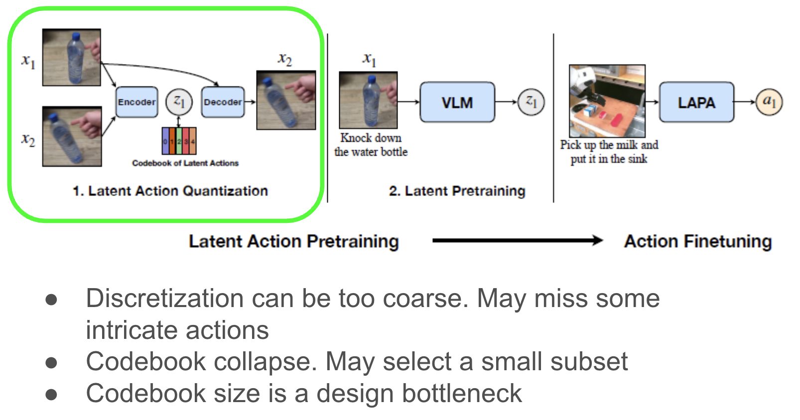
This project deliberately stops at Phase 1 — learning and rigorously evaluating z
itself — and asks one focused question:
We compare four published recipes [1] [2] [3] [4] (re-implemented as comparable controlled proxies; the villa-X entry is video-only because STHV2 lacks robot proprioception and actions) against a continuous latent regularized with VICReg variance/covariance terms. The whole point is the controlled comparison and the honest measurement, not a giant new model.
2. Methodology
2.1 The five methods
The comparison has two layers. The experimental harness is shared: same frame pairs, labels, latent dimension, optimizer budget, export format, and decoder-free retrieval evaluation. The trainable model instance is not shared: every method has its own encoder/decoder weights and receives gradients from its own loss.
What "common encoder/decoder" means
For the pixel-space methods, "common" means the same module architecture and interface, not one
set of weights reused by all methods. LAPA-NSVQ [1], the villa-X visual-FDM proxy [4],
and VICReg instantiate separate copies of CommonEncoder and CommonDecoder.
AdaWorld [2] uses the same convolutional trunk but has
Variational Autoencoder (VAE) heads that predict μ and logσ². UniVLA [3] is
deliberately different: it operates in frozen DINOv2 visual-feature space with T5 text features and predicts
future DINOv2 features instead of pixels.
The five method families, in plain language
LAPA-NSVQ [1]
LAPA means a Latent Action Pretraining-style baseline: it tries to compress the change between two frames into a small action code. NSVQ means Noise-Substitution Vector Quantization, a discrete-code method that uses noise during training so gradients can still reach the encoder.
AdaWorld β-VAE [2]
AdaWorld is represented here as a continuous latent baseline inspired by adaptive world-model training. β-VAE means beta-weighted Variational Autoencoder: the encoder predicts a Gaussian latent distribution, and a Kullback-Leibler (KL) penalty keeps that distribution near a simple normal prior.
UniVLA DINO-VQ [3]
VLA stands for Vision-Language-Action, so UniVLA is the vision-language-action style baseline. Instead of reconstructing pixels, it uses frozen DINOv2 visual features from a pretrained image model and T5 (Text-to-Text Transfer Transformer) text features, then applies VQ (Vector Quantization) to learn a discrete action code.
villa-X visual-FDM proxy [4]
villa-X learns discrete vector-quantized action tokens and, in the paper, grounds them with a proprio-FDM (proprioceptive Forward Dynamics Model) that predicts future robot proprioceptive states and low-level robot actions. Because Something-Something V2 has video but no robot state/action stream or embodiment context, this project uses a visual-FDM proxy: the auxiliary head predicts future Sobel edge structure instead. A Sobel edge map strips an image down to outlines and object boundaries; the proxy asks whether the current outlines plus z can predict where those outlines move next. Read the results as a villa-X-inspired proxy, not a full reproduction of the paper's proprioceptive grounding module.
VICReg (ours)
VICReg stands for Variance-Invariance-Covariance Regularization. In this project we use the variance and covariance parts to keep the continuous latent dimensions active and decorrelated, without a codebook or Gaussian sampling step.
Same Something-Something V2 frame pairs, labels, 32-d latent size, training budget, exported latents, retrieval evaluation, and Vision-Language Model scoring.
z.m is the key:
every method owns its own encoder, decoder, and latent-module weights and sees its own loss.Method-specific latent modules and losses
| Method | Forward path | Extra loss beyond reconstruction | Gradient intuition |
|---|---|---|---|
| LAPA-NSVQ [1] | CommonEncoder → nearest 64-code vector; train-time NSVQ outputs differentiable noise-substituted z, eval uses exact z_q. |
Lextra = β·‖ze − sg[zq]‖22
Commitment only, implemented as MSE; β=0.25. |
Reconstruction and residual-norm gradients keep the encoder/codebook trainable while commitment pulls z_e toward its selected code. |
| AdaWorld β-VAE [2] | Same conv trunk shape, but two heads produce μ and logσ²; train samples z=μ+σε, eval exports μ. |
Lextra = β·KL(N(μ,σ2) ‖ N(0,I))
= β·½ Eb Σj(μbj2 + σbj2 − logσbj2 − 1)
β=2e-4. |
The reparameterization trick lets reconstruction gradients reach the Gaussian heads; KL gently pulls the latent toward a unit normal prior. |
| UniVLA DINO-VQ [3] | Frozen DINOv2 features from both frames + frozen T5 label embedding → projection → standard VQ → feature decoder. | Lextra = ‖sg[ze] − zq‖22 + β·‖ze − sg[zq]‖22
Added to DINO-feature reconstruction; β=0.25. |
DINOv2 and T5 stay frozen; gradients update only the projection, VQ codebook, and feature decoder. |
| villa-X visual-FDM proxy [4] | CommonEncoder → standard VQ → CommonDecoder, plus a Sobel-edge visual-FDM proxy head. The paper's auxiliary target is proprioceptive robot state/action prediction; this dataset-only proxy replaces that unavailable signal. |
Lextra = λs·MSE(ŝt+H, st+H) + ‖sg[ze] − zq‖22 + β·‖ze − sg[zq]‖22
Sobel visual-FDM proxy; λs=1, β=0.25. |
Straight-through VQ copies decoder gradients to z_e; the Sobel proxy adds pressure for z to explain where visible structure moves, but it is not the paper's proprio-FDM grounding signal. |
| VICReg (ours) | CommonEncoder → raw continuous z → CommonDecoder; no codebook, no sampling. |
Lextra = λv·1/d Σj max(0, 1 − std(zj)) + λc·1/d Σi≠j Cov(z)ij2
Batch statistics; λv=1, λc=0.05. |
Everything is differentiable; variance prevents dead dimensions and covariance discourages redundant dimensions. |
2.2 Dataset
We use Something-Something V2 (STHV2), ~220k short clips of humans performing 174 templated manipulation actions (e.g. "Pushing [something] from left to right"). It is ideal here because the template is a clean, action-centric label of the transition — exactly what a latent action should capture — while object/background vary widely.
- From each clip we sample a frame pair
(xt, xt+H)with a fixed gap ofH=12frames (deterministic center sampling for export/eval, random during training). - Splits (this tier): 5,000 train clips, 1,000 validation, 1,000 test
(disjoint videos — verified no
video_idoverlap between the retrieval bank and queries). - Frames are resized to 224×224, RGB, scaled to [0,1].
2.3 Experimental setup
| Setting | Value |
|---|---|
| Latent dim | 32 (all methods) |
| Codebook size (discrete) | 64 codes |
| Training steps | 5,000 (90-min wall-clock cap per method) |
| Batch size | 64 (needed for stable VICReg/covariance statistics) |
| Precision | bf16 mixed precision |
| Hardware | 2×24 GB GPUs (training parallelized across methods) |
| Frozen backbones | DINOv2-Base + T5-small (UniVLA only) |
| VLM scorer | Qwen3-VL-8B-Instruct with TOPReward-style True/False scoring [5] in an isolated .venv_vlm |
All methods share the same latent dim, optimizer schedule, data, budget, and evaluation
pipeline. The pixel-space models share the same encoder/decoder template where appropriate, but they are
separate trained instances; UniVLA is the frozen-feature-space exception. The β for VQ commitment
was decoupled from the VAE β so each is set correctly.
2.4 Evaluation setup
We evaluate z in three complementary regimes:
- Latent geometry & codebook health — intrinsic statistics of the exported test latents (no labels needed): is the latent space full-rank and well-used, or collapsed?
- Semantic probing — can a simple linear probe / kNN recover the action template from
z? (An upper-bound-free check of how much task semantics is linearly accessible.) - Decoder-free retrieval + VLM progress (our main contribution) — standardize
zby the train bank's mean/std, do cosine nearest-neighbor retrieval from each of the 1,000 test queries into the 5,000-clip train bank, then fetch the retrieved clip's real future frame and ask a VLM (TOPReward / Qwen3-VL-8B [5]) how much task progress it shows for the query instruction. Because we score real frames, the metric reflectszquality, not decoder quality. The protocol is identical for all five methods, with uniform-random and wrong-template controls.
Why a decoder-free metric?
When we scored decoded future frames with the same VLM, every pixel decoder scored near zero (progress ≈ 0.065, real-minus-decoded gap ≈ 0.78). Here, "90-minute" means each full method — including its encoder, latent module, and decoder — was trained under the same 90-minute wall-clock budget. Under that limited budget, the learned pixel decoders still produced blurry future frames, so the VLM could not reliably read task progress from them. That is a decoder bottleneck, not az failure —
so headlining decoded scores would be misleading. Retrieving real frames by z removes the decoder
from the loop.
2.5 Decoder-free VLM scoring
The core trick is to use z as a retrieval key instead of asking the decoder to draw a
future image. For each test query, we find the nearest training example in standardized, L2-normalized
z-space, then score that training example's real future frame. This asks whether the
latent representation retrieves the right kind of action, without letting blurry generated pixels dominate the
evaluation.
- Build a train bank: export one latent
zand one real future frame for every training clip. - Retrieve by latent similarity: compute the test clip's
z, find its nearest train-bank neighbor by cosine similarity, and use that neighbor's real future frame as the candidate image. - Ask TOPReward/Qwen3-VL [5]: show the VLM the query current frame, the candidate future frame, and the query instruction, then ask: "Compared to the first frame, does the last frame show this task being completed or making clear visual progress? Answer True or False."
- Turn the answer into a score: read the model's first-token probability for
TrueandFalse, then compute progress = P(True) / (P(True) + P(False)) A score near 1 means the VLM is confident the future shows progress; near 0 means it does not.
We also score a random future and a wrong-template future for the same query. The headline VLM quantity is
often lift over random: if the retrieved future scores 0.16 and a random future scores 0.03, the lift is
+0.13. Positive lift means the latent is retrieving future frames that look more task-relevant than
chance.
2.6 Evaluation metrics
| Metric | Intuitive definition + toy example |
|---|---|
| Effective rank / participation ratio | Asks whether the 32-d latent actually uses many independent directions, or collapses into only a few. Toy example: if every video change only moves along one hidden axis, the effective rank is near 1; if different changes spread across 20+ axes, the rank is high. Participation ratio is a complementary "how many dimensions carry substantial energy?" version of the same collapse check. |
| Correlation off-diagonal | Asks whether latent dimensions are redundant after normalizing away scale. Lower is better. Toy example: if dimension 2 almost always copies dimension 1, they are highly correlated and the score rises; if one dimension tracks vertical motion while another tracks object contact, the score falls. |
| Code perplexity / dead-code % | Discrete-only codebook health. Perplexity is the effective number of codes being used; dead-code % is the fraction of the 64 codes never selected. Toy example: if a 64-code model uses only 4 codes equally often, perplexity is about 4 and most codes are dead; if it uses 50 codes often, the codebook is much healthier. |
| Linear top-1 / top-5 probe acc. | Trains a simple logistic-regression classifier on z to predict the action template. This checks whether template information is easy to read from the latent. The current exported test set contains 105 templates, so chance is roughly 1/105 for top-1 before accounting for imbalance, not exactly 1/174. Toy example: if the true label is "pushing left to right" and the classifier's first guess is correct, top-1 gets credit; if it appears anywhere in the classifier's five best guesses, top-5 gets credit. |
| kNN same-template rate | Within the exported test set, find each sample's 5 nearest non-self neighbors in raw z-space and ask how many share its template. Toy example: if a query's five nearest test latents include three "pushing left to right" examples and two unrelated actions, that query contributes 3/5 = 60%. |
| Top-1 / top-5-mean same-template (retrieval) | Decoder-free train-bank retrieval. We standardize z using the train bank's mean/std, L2-normalize, retrieve nearest train examples for each test query, and check whether their templates match the query. Toy example: if the closest train neighbor has the correct template, top-1 is 1 for that query; if 2 of the top 5 neighbors match, top-5-mean is 2/5 = 40%. This is not hit@5. |
| Template-MRR | Mean reciprocal rank of the first correct-template train neighbor within the retained retrieval buffer. Earlier correct matches count much more. Toy example: first correct neighbor at rank 1 gives 1.0; rank 4 gives 1/4 = 0.25; no correct neighbor in the buffer gives 0. |
| VLM progress (NN-1) | The TOPReward/Qwen3-VL progress score [5] for the single nearest train-bank future frame retrieved by z. It asks: "Given the query's current frame and instruction, does the top-1 retrieved real future look like progress on that task?" Toy example: for "pushing left to right," if the nearest retrieved future shows the object moved right, the score may be high (e.g. 0.16); if it shows an unrelated action, the score may be low (e.g. 0.03). |
| TOPReward lift over random | Asks whether the real future frame retrieved by z looks like more task progress than a random real future frame, according to TOPReward/Qwen3-VL [5]. Toy example: if the VLM scores the retrieved future 0.16 and a random future 0.03 for the same query instruction, the lift is +0.13. The CI is a bootstrap confidence interval over query-level differences. |
| Wrong-template contrast | Asks whether the retrieved future is action-specific, not just any plausible future frame. We compare the TOPReward score [5] of the z-retrieved real future to a control real future sampled from a different template, both judged against the query's instruction. Toy example: for "lifting up," if the z-retrieved future scores 0.16 and the different-template control scores 0.06, the contrast is +0.10. |
3. Results & failure cases
Latent geometry — VICReg uses the space; discrete codes stay narrow
| Method | Eff. rank ↑ | Part. ratio ↑ | Corr off-diag ↓ | Code perplexity ↑ | Dead codes ↓ | Linear top-5 ↑ |
|---|---|---|---|---|---|---|
| LAPA-NSVQ [1] | 6.94 | 3.62 | 0.485 | 45.0 | 1.6% | 15.0% |
| AdaWorld β-VAE [2] | 10.70 | 5.47 | 0.470 | n/a | n/a | 12.0% |
| UniVLA DINO-VQ [3] | 14.63 | 9.71 | 0.261 | 17.8 | 67.2% | 19.5% |
| villa-X visual-FDM proxy [4] | 5.14 | 2.67 | 0.576 | 51.2 | 0.0% | 15.5% |
| VICReg (ours) | 23.93 | 18.69 | 0.147 | n/a | n/a | 15.5% |
Decoder-free retrieval + VLM — the headline result
Identical protocol for all methods; random same-template baseline = 1.32%. Shared VLM references: real future progress 0.83, no-change 0.38, random future 0.03, wrong-template 0.06 (scorer sanity: real > no-change in 95% of clips).
| Method | Top-1 same-tmpl ↑ | Top-5 mean ↑ | Template-MRR ↑ | VLM progress (NN-1) ↑ | Lift over random (95% CI) ↑ | Wrong-tmpl contrast ↑ |
|---|---|---|---|---|---|---|
| LAPA-NSVQ [1] | 1.7% | 1.8% | 0.065 | 0.033 | +0.005 [−0.025, 0.031] | −0.026 |
| AdaWorld β-VAE [2] | 5.0% | 2.9% | 0.098 | 0.064 | +0.036 [−0.002, 0.076] | +0.005 |
| UniVLA DINO-VQ [3] | 2.4% | 1.8% | 0.066 | 0.058 | +0.030 [0.002, 0.061] | −0.001 |
| villa-X visual-FDM proxy [4] | 1.9% | 1.9% | 0.067 | 0.035 | +0.006 [−0.020, 0.029] | −0.025 |
| VICReg (ours) | 6.3% | 3.4% | 0.110 | 0.156 | +0.127 [0.067, 0.190] | +0.096 |
VICReg is the only method with a statistically significant VLM progress lift and a clearly positive wrong-template contrast: the futures it retrieves are read by the VLM as substantially more task-relevant than both random and wrong-action futures.
Failure cases — one strong example per baseline vs. ours
Each panel shows a test query (current frame → true future), then the real future frame each
method retrieves via its own z. In every case VICReg retrieves the correct action template
while the baseline drifts to a different action. (These are real retrieved frames, so what you see is
literally what each latent "thinks" comes next.)
LAPA-NSVQ failsVICReg correct Instruction: "pushing bottle from left to right"
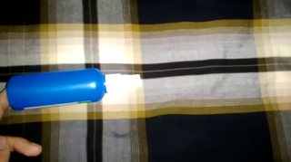

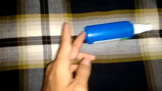
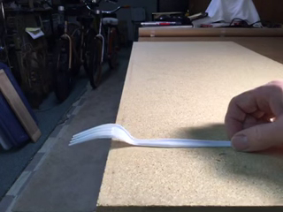
VICReg's nearest future is the same "push left→right" action (VLM progress 0.99); LAPA's discrete code lands on a different push variant (progress 0.00).
AdaWorld failsVICReg correct Instruction: "throwing tissue"
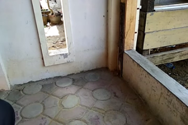
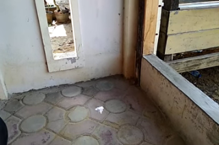
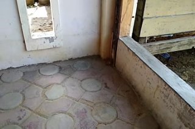
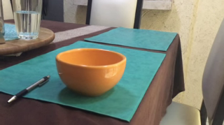
VICReg retrieves the same action clip (exact label match: tissue on tiled floor); AdaWorld drifts to a different action (dropping near a bowl on a table).
UniVLA failsVICReg correct Instruction: "covering bottle with paper"
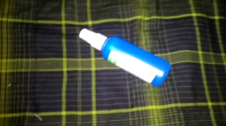

VICReg retrieves a "covering" action; UniVLA's DINO/VQ code drifts to a generic "putting on a surface" clip (wrong template).
villa-X proxy failsVICReg correct Instruction: "lifting pencil up completely without letting it drop down"
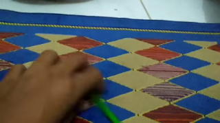
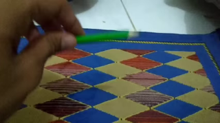

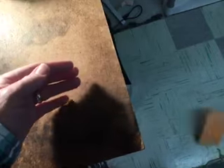
VICReg retrieves the same action clip (exact label match: green pencil lifted over the mat); the villa-X visual-FDM proxy drifts to a push/fall-off action on a different scene.
4. Limitations
- Small scale and single-run evidence. 5,000 clips and a 90-minute budget per method. Absolute numbers are low, and the trends come from this 5k-clip training tier rather than a multi-seed sweep. They are informative diagnostics, not final rankings of the original papers.
- Controlled proxies, not the full papers. All published baselines are re-implemented inside one small, shared harness rather than reproduced as the authors' full systems. UniVLA [3] and the villa-X visual-FDM proxy [4] are especially proxy-like here: UniVLA is reduced to a DINO/T5 feature-space latent model, and villa-X's paper uses a proprio-FDM to predict future robot proprioceptive states and low-level actions with embodiment context. Our STHV2 version lacks those signals and substitutes a Sobel-edge visual-FDM proxy.
- Semantics still weak. Top-1 direct template probes remain low for every method. Top-5 and retrieval metrics show weak signal, but no method demonstrates strong, linearly-accessible action semantics at this tier.
- Decoder bottleneck. Under the 90-minute full-method training budget, the learned pixel decoders remain too blurry for decoded-frame VLM scoring; that is precisely why we built the retrieval-based metric.
- Retrieval-bank coverage. Decoder-free retrieval can only choose from the 5,000 real futures in the
train bank. If the bank lacks a close analogue for a test query, even a useful
zmay retrieve an imperfect future. - Cross-video retrieval confound. Retrieved futures come from other videos, so absolute VLM progress is low; we therefore headline lift-over-random and wrong-template contrast (both apples-to-apples) rather than retention-vs-no-change.
- No downstream policy yet. This page evaluates latent geometry, template retrieval, and VLM progress,
not whether a downstream robot or video-policy model trained to predict
zperforms better. - VLM-as-judge. Progress scores depend on Qwen3-VL-8B / TOPReward [5]; we validated the scorer in-domain before using it as a judge. For real STHV2 clips, we sampled chronological frames and checked whether the VLM's progress scores increased in the same order as the video advanced. The median value-order correlation was 0.81, meaning the scorer usually ranked later, more-complete frames above earlier frames; it is a correlation, not an 81% accuracy. This follows the value-judgment framing in GVL [6], but it is still a model, not ground truth.
5. References
The latent-action baselines and VLM scoring/validation references are cited below.
- [1] Ye et al. (2025), Latent Action Pretraining from Videos, ICLR 2025.
- [2] Gao et al. (2025), AdaWorld: Learning Adaptable World Models with Latent Actions, ICML 2025 / PMLR.
- [3] Bu et al. (2025), Learning to Act Anywhere with Task-centric Latent Actions, arXiv:2505.06111.
- [4] Chen et al. (2025), villa-X: Enhancing Latent Action Modeling in Vision-Language-Action Models.
- [5] Chen et al. (2026), TOPReward: Token Probabilities as Hidden Zero-Shot Rewards for Robotics, Preprint.
- [6] Ma et al. (2025), Vision Language Models are In-Context Value Learners, ICLR 2025.
6. Conclusion & next steps
What this controlled study adds: a unified five-method latent-action harness; a
validated decoder-free retrieval + TOPReward/Qwen3-VL progress evaluation [5];
and a small-scale result showing that VICReg's z organizes frame-to-frame change best among these
methods at the 5k-clip training tier.
Next steps
- Scale the train bank (25k–100k clips) and lengthen training to test whether VICReg's lead holds and whether semantic probes rise above chance.
- Add stricter retrieval checks: compare each method against a random clip with the same action label, and for VQ methods, test whether the learned code ID itself retrieves useful neighbors.
- Replace the lightweight pixel decoder with a stronger one (or a latent-diffusion head) to make decoded-frame VLM scoring viable as a second axis.
- Phase 2: train a downstream policy to predict
zand measure whether better latent geometry/retrieval translates into better control.